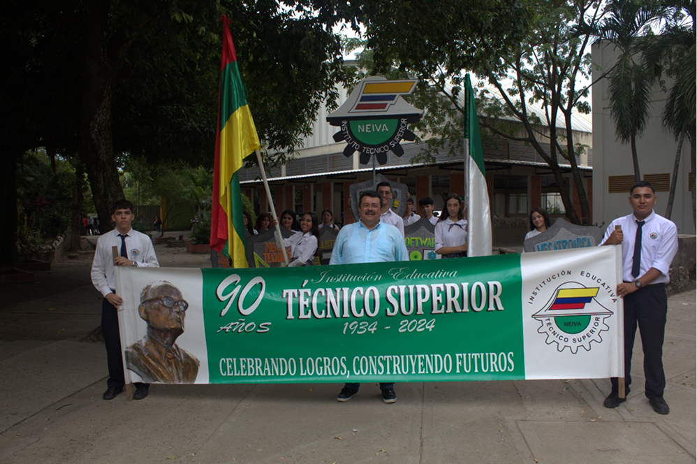
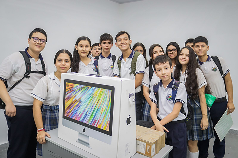

“Orientar no es solo guiar caminos, sino despertar conciencias para que cada estudiante descubra, construya y viva su propio proyecto de vida.”
¿Qué es el POE?
El POE es el Proyecto de Orientación Escolar del Técnico Superior Neiva, el cual se encarga de la inscripción y caracterizacion de los estudiantes de la institución, así como de la atención a estos. Este proyecto es impulsado por las dos psicorientadoras de la institución, de la jornada mañana y tarde.

Vision
¿Es confuso, verdad? Sin embargo sabes perfectamente cuando estás mal; todo tu cuerpo, física y mentalmente te lo hace saber. Te notás flojo, con pensamientos fatalistas, esa sensación de que todo está perdido, que ya nada será como antes. Te torturas recordando una vivencia pasada aleatoria —que en aquel entonces ni siquiera parecía un buen momento— pero comparado con cómo te sientes ahora, podría incluso decirse que… fuiste feliz sin saberlo.

Objetivo
¿Es confuso, verdad? Sin embargo sabes perfectamente cuando estás mal; todo tu cuerpo, física y mentalmente te lo hace saber. Te notás flojo, con pensamientos fatalistas, esa sensación de que todo está perdido, que ya nada será como antes. Te torturas recordando una vivencia pasada aleatoria —que en aquel entonces ni siquiera parecía un buen momento— pero comparado con cómo te sientes ahora, podría incluso decirse que… fuiste feliz sin saberlo.
Mision
¿Es confuso, verdad? Sin embargo sabes perfectamente cuando estás mal; todo tu cuerpo, física y mentalmente te lo hace saber. Te notás flojo, con pensamientos fatalistas, esa sensación de que todo está perdido, que ya nada será como antes. Te torturas recordando una vivencia pasada aleatoria —que en aquel entonces ni siquiera parecía un buen momento— pero comparado con cómo te sientes ahora, podría incluso decirse que… fuiste feliz sin saberlo.

Contacto Directo Via Email
DaCode@example.com